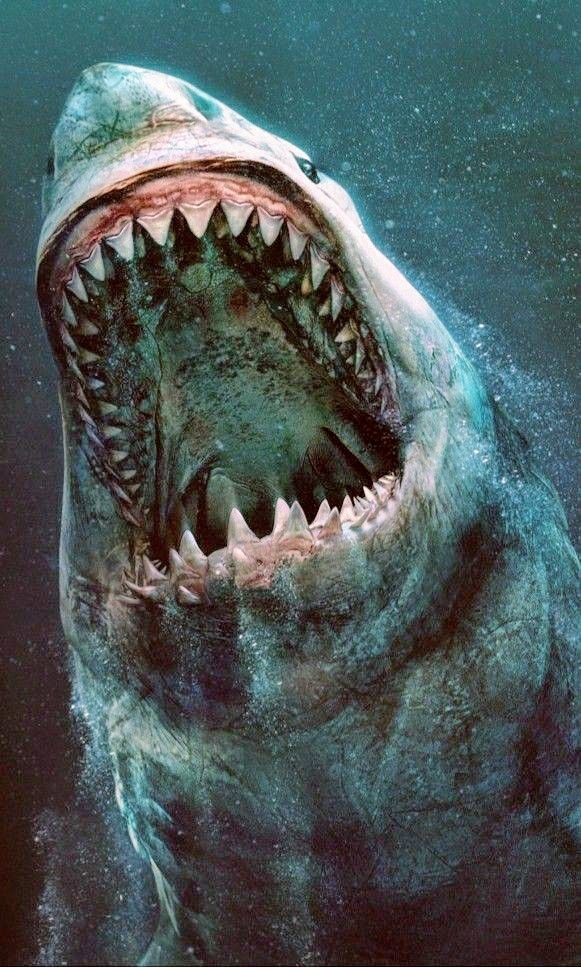
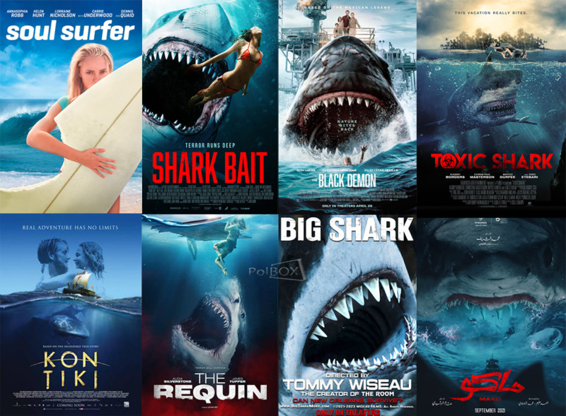
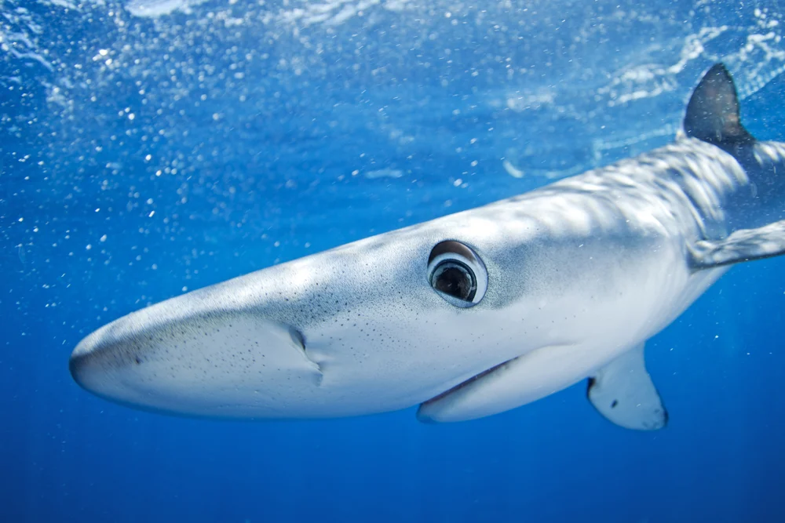
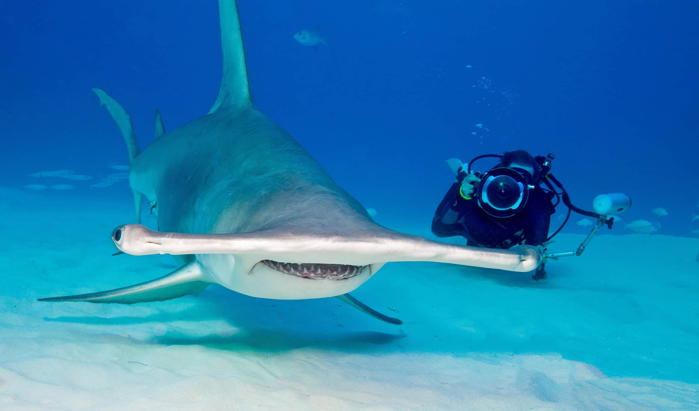
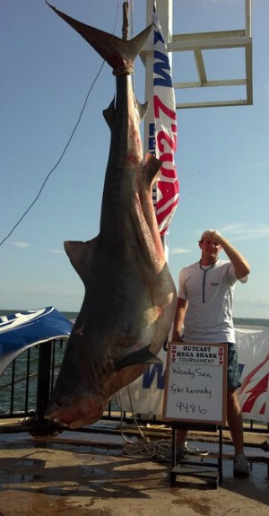
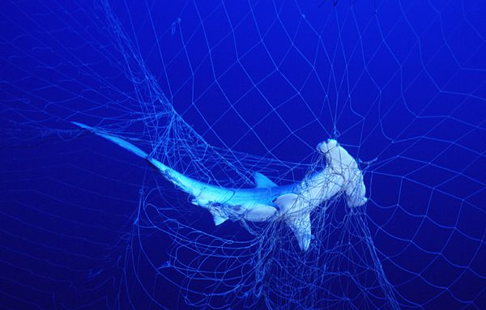

class: center, middle <!-- In deze textarea kan je in Markdown de slides aanpassen, zie https://github.com/gnab/remark/wiki voor alle mogelijkheden! --> # Inspiratie voor de digital garden van Bryenne Fredison --- # Agenda 1. Onderwerp: Haaien 2. 10 links 3. 50 afbeeldingen 4. 8 slides 5. Introtekst --- # Het onderwerp: Haaien Haaien zijn mooie interessante dieren die verkeerd begrepen worden door de mens. Wat denken wij over haaien vs wat zijn ze eigenlijk. Afbeeldingen: <ul> <li> <p></p> <p></p> </li> <li> <img src="./images/CuteShark1.jpg.avif" alt="CuteHaai"> <p></p> <p></p> </li> <li> <p></p> <p></p> <img src="./images/HuntingSharks3.avif" alt="HuntingSharks3"> </li> </ul> --- # 10 links Deze 10 links heb ik gelezen, geraadpleegd ter inspiratie, en mij in het onderwerp verdiept. <ul id="inspolinks"> <li><a href="https://www.wwf.nl/dieren/haai">https://www.wwf.nl/dieren/haai</a></li> <li><a href="https://neal.fun/deep-sea/">https://neal.fun/deep-sea/</a></li> <li><a href="https://www.fisheries.noaa.gov/feature-story/12-shark-facts-may-surprise-you">https://www.fisheries.noaa.gov/feature-story/12-shark-facts-may-surprise-you</a></li> <li><a href="https://saveourseas.com/worldofsharks/which-sharks-are-the-most-endangered">https://saveourseas.com/worldofsharks/which-sharks-are-the-most-endangered</a></li> <li><a href="https://saveourseas.com/worldofsharks/3dsharks/white-shark">https://saveourseas.com/worldofsharks/3dsharks/white-shark</a></li> <li><a href="https://www.ifaw.org/nl/journal/haaien-houden-oceaan-gezond">https://www.ifaw.org/nl/journal/haaien-houden-oceaan-gezond</a></li> <li><a href="https://www.ocearch.org/tracker/detail/baker">https://www.ocearch.org/tracker/detail/baker</a></li> </ul> --- # Mijn 50 afbeeldingen Waarom kies je specifiek voor deze verzameling? Zijn er patronen te ontdekken? Heeft alles een specifieke kleurstelling? Herken je een actie, een gevoel, een materiaal of een standpunt? Wat is kenmerkend voor deze verzameling? Welke dingen komen steeds terug? --- <!-- Slide zonder titel! --> Hieronder een beeld van de stijl(en) die ik wil gebruiken, het lettertype, en kleuren.  ---  --- # Introtekst Ik wil anderen vertellen dat haaien best wel wat coole facts hebben en meedelen hoe belangrijk zij zijn voor het ecosysteem Ik wil vertellen dmv veel tekst maar ook leuke interactieve elementen, afbeeldingen en misschien filmpjes. Haaien zijn een van de oudste diersoorten op aarde. Zij bestaan al ongeveer 400 miljoen jaren, dat is zelfs ouder dan dinosaurussen! Zij hebben een zeer goede geheugen, en zelfs probleem-oplossende vaardigheden. Dus slimme dieren ook. Zij zijn een heel belangrijk onderdeel van het mariene ecosysteem en zorgen voor de balans en gezondheid van de oceanen. Haaien worden vaak verkeerd begrepen door de mens. Wij zien de haaienfilms en denken vaak dat zij agressieve jagers zijn, die bij elke kans die ze krijgen graag een mens op het menu hebben staan. Maar dat is helemaal niet zo. Per jaar sterven gemiddeld 10 personen aan een haaienaanval, in vergelijking tot 100 miljoen haaien die elk jaar sterven door de mens. Wie vormt dus de echte bedreiging? Haaien zijn inderdaad een bedreigde diersoort, en dat komt door de mens. Hoe kunnen wij deze bedreiging tegengaan? Hoe lossen wij het op? <!-- Laat onderstaande staan anders breekt je presentatie -->